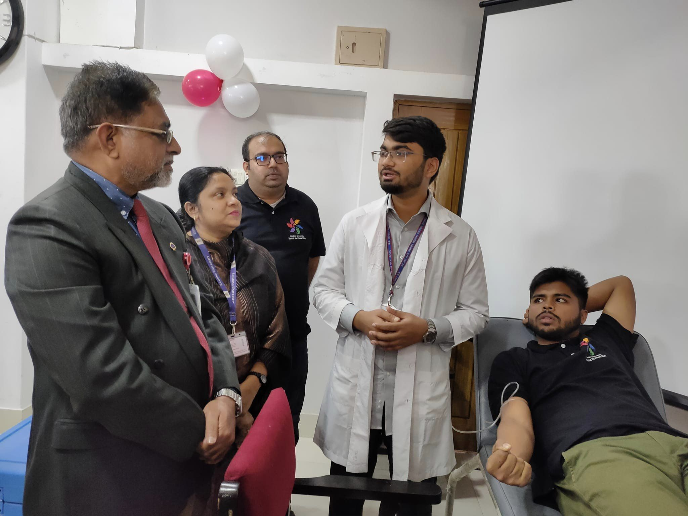
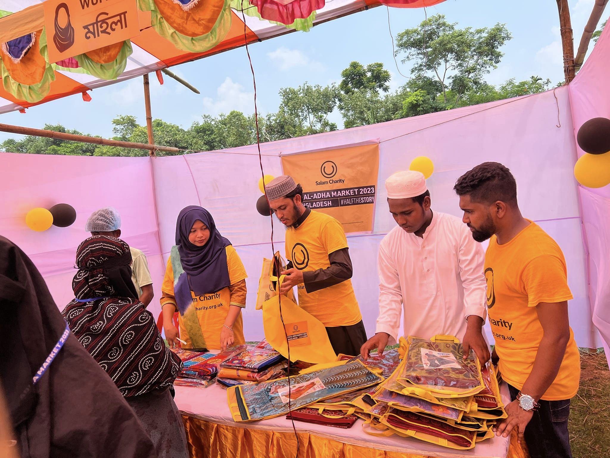

Our Events
Film Fest

Leading University Social Services Club organized "Film Festival 2023" like every year. The film screening was organized to raise funds for Alo School, a project of the Leading University Social Services Club.
More DetailsBlood Donation
"Blood Donation & Vaccination Campaign-2022" was organized by LUSSC under the title "Be the reason for someone's heartbeat". Honorable Professor Kazi Azizul Mawla inaugurated the event.
More DetailsDistribution Campaign
Volunteers from LUSSC participated in an event titled as "Eid Al Adha Market 2023" organised by Salam Charity. We were able to distribute clothes and other necessary items to 60 families.
More Details